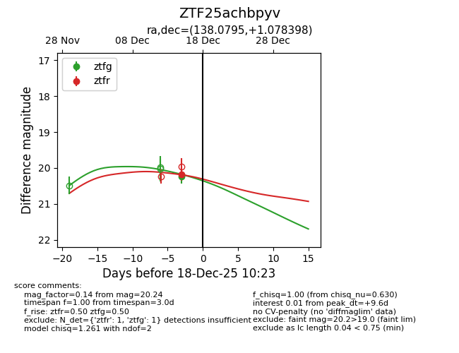
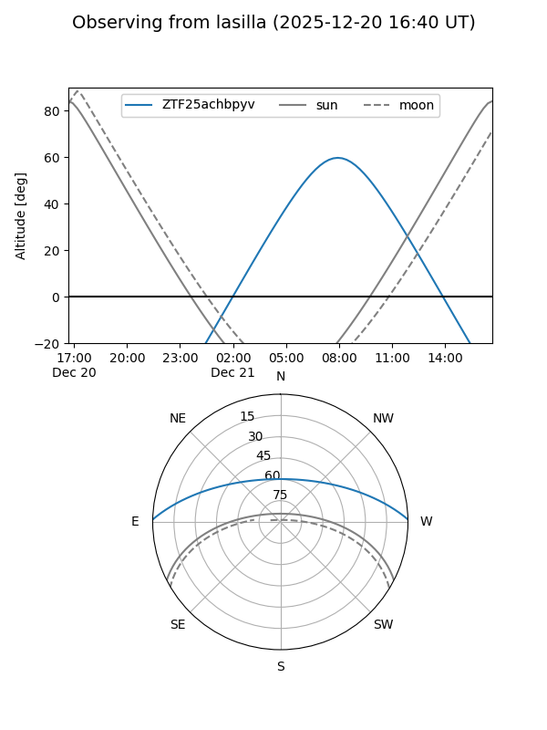
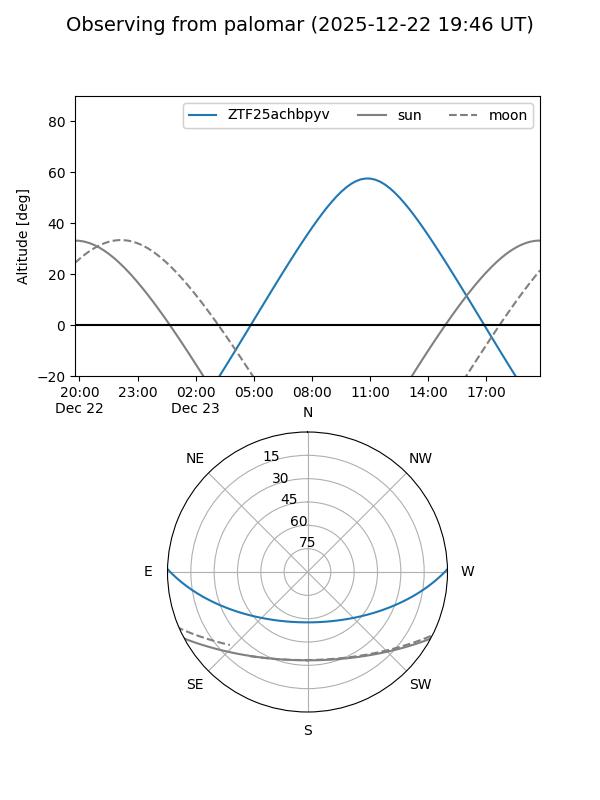

ZTF25achbpyv
Target ZTF25achbpyv at 2025-12-18 11:18
Aliases and brokers:
FINK: fink-portal.org/ZTF25achbpyv
Lasair: lasair-ztf.lsst.ac.uk/objects/ZTF25achbpyv
ALeRCE: alerce.online/object/ZTF25achbpyv
alt names
ZTF25achbpyv (ztf,fink_ztf)
Coordinates:
equatorial (ra, dec) = 138.0795,+1.07840
equatorial (HMS+DMS) = 09:12:19.07,+01:04:42.23
galactic (l, b) = (229.7044,+31.45056)
Photometry
last ztfg=20.24, ztfr=20.17
1 ztfg, 1 ztfr detections
Lightcurve

Visibility


Additional plots